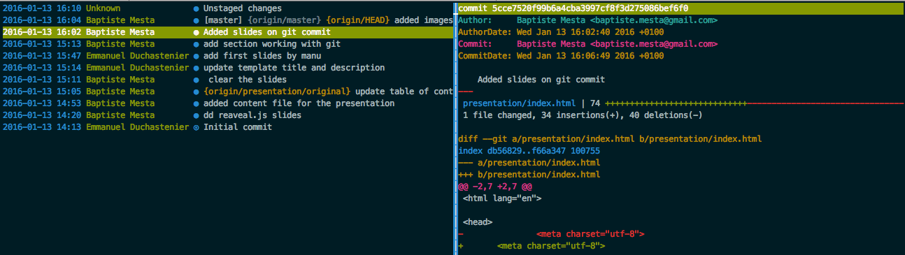

Git
for the newbies
What is git?
a Distributed VCS (Version Control System):
Every local copy contains the whole content of the "central" repository
No Network Needed for:
- Performing a diff
- Viewing file history
- Committing changes
- Merging branches
- Obtaining any other revision of a file
- Switching branches
You can now code in the bus / train / plane / boat
Git stores Snapshots, Not Differences
Where other VCS record Deltas to rebuild the complete files, GIT stores snapshots of modified files.
SVN:

Git stores Snapshots, Not Differences
Git:
Some PITAs in other VCS (like CVS, SVN...)
- checking out was often slow
- fixing conflicts was done at commit
- branching did a full copy of all files
- merging was for the brave only
Advantages on other VCS
Git aims at proposing:
- Speed
- Simple design
- Strong support for non-linear development (thousands of parallel branches)
- Fully distributed
- Able to handle large projects like the Linux kernel efficiently (speed and data size)
Indeed Git is fast: operations are almost instantaneous
The entire history is accessible offline
Branching is not scary. Actually, branching is the essence of Git. It so easy and flexible that we create several branches every day.
Repository working copy
Current version of the file / folder structure + .git directory

Git areas

Setting-up Git working
Installation on Windows
Download it from http://git-scm.com/download/win
Add a GUI on top, or use the command line
Installation on linux
$ sudo apt-get install git
Add a GUI on top, or use the command line
Installation on a Mac
Use your favorite package installer, or refer to standard git-scm procedure
Working with git
Commits

how to commit
git commit -a
Enter a commit comment

Commit is now in the history
log
Show the history of a repository
git log
commit fc365c472c195e40d8f4b6278b17a88750e81a92
Author: Baptiste Mesta <baptiste.mesta@gmail.com>
Date: Wed Jan 13 16:04:29 2016 +0100
added images
commit 5cce7520f99b6a4cba3997cf8f3d275086bef6f0
Author: Baptiste Mesta <baptiste.mesta@gmail.com>
Date: Wed Jan 13 16:02:40 2016 +0100
Added slides on git commit
commit 58782ccae98c181c68f3297b9d08ae7aed0e2844
Author: Baptiste Mesta <baptiste.mesta@gmail.com>
Date: Wed Jan 13 15:13:01 2016 +0100
add section working with git
but having a graphical interface is better...
Adding file to commit

the staging area is a buffer where you define what will be in the next commit
add a single file
git add myfile.txt
add all files
git add --all
before adding
$git status
on branch master
Your branch is up-to-date with 'origin/master'.
Changes not staged for commit:
(use "git add <file>..." to update what will be committed)
(use "git checkout -- <file>..." to discard changes in working directory)
modified: presentation/index.html
Untracked files:
(use "git add <file>..." to include in what will be committed)
presentation/images/staging.png
no changes added to commit (use "git add" and/or "git commit -a")
after git add --all
$git status
On branch master
Your branch is up-to-date with 'origin/master'.
Changes to be committed:
(use "git reset HEAD <file>..." to unstage)
new file: presentation/images/staging.png
modified: presentation/index.html
you can now commit using git commit
fetch pull and push
these command allow interaction with a remote repository
fetch and pull
git fetch retrieve changes from a remote repository but do not change the working copy
git pull is used more often, it is a shortcut that does git fetch and git merge
Github
GitHub is a Web-based Git repository hosting service
Cloning a remote repository
$ git clone git@github.com:bonitasoft/bonita-engine.gitAnd you're done to get working!
You have the whole copy of the repository, with all the branches, etc. remember?
Forking a remote repository
When you don't have right access to the repository in which you want to make changes
Go to Github and click Fork
You then have a copy of the repo on which you can commit, create branches, and ...
Pull Request
A PR is a request for changes to be applied in a specific branch
Pull Request - use case
You want to change something somewhere in the code.
You may not have the rights to commit on this repository
You may have the rights to commit but want your changes to be reviewed and commented before applying.
Pull Request - how-to
- create a local branch from the branch you detect the error (eg. fix/typo_BDM_espanol)
- make the changes you want - commit them (can be several commits)
- push that local branch on the remote repository
- go to that branch on Github
- Click Create new Pull Request
- Select the base branch into which you want the changes to be applied
Changes can them be reviewed to be applied.
Applying a pull request is actually Merging the branch into the base branch.